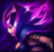
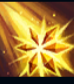
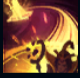
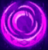

Le Blanc

| Le Blanc The Deceiver | |
|---|---|
| Release date | 02.10.2010 |
| Class | Burst |
| Positions | Middle |
| Resource | Mana |
| Range type | Ranged |
| Adaptive type | Magic |
| Base statistics | |||
| Health | 528 – 2092 | Mana | 334 – 1184 |
| Health regen. | 7.5 – 16.85 |
Mana regen. | 6 – 19.6 |
| Armor | 22 – 81.5 | Attack damage | 55 – 114.5 |
| Magic resist. | 30 – 38.5 | Crit. damage | 175% |
| Move. speed | 340 | Attack range | 525 |
E învăluită în mister chiar și pentru ceilalți membri ai Trandafirului negru, iar numele de LeBlanc este doar unul dintre cele folosite pentru femeia palidă care a manipulat oameni și evenimente încă din primele zile ale Noxusului. Își folosește magia pentru a-și recrea prezența și poate apărea oriunde, în fața oricui, uneori în mai multe locuri în același timp. LeBlanc își țese planurile în întuneric, iar motivele ei și secretele din spatele iluziilor rămân necunoscute. |  |
IMAGINE ÎN OGLINDĂ Când are sub 40% viață, LeBlanc devine invizibilă timp de 1 secundă și își creează o ''Imagine în oglindă'' care nu provoacă daune și rezistă cel mult 8 secunde. |
||
|---|---|---|---|---|
 |
SIGILIUL CRUZIMII LeBlanc plasează un sigiliu, provocând daune și însemnând ținta timp de 3,5 secunde. Dacă apoi îi provoacă daune acelei ținte folosind orice abilitate, sigiliul se detonează și provoacă daune suplimentare. |
|||
 |
DISTORSIUNE LeBlanc se năpustește spre o locație-țintă, provocându-le daune inamicilor din acea zonă. În următoarele 4 secunde, poate activa din nou ''Distorsiunea'' pentru a reveni în poziția inițială. |
|||
| LANȚURI ETERICE LeBlanc aruncă un lanț care se prinde de primul inamic lovit. Dacă ținta rămâne prinsă timp de 1,5 secunde, LeBlanc o țintuiește și îi provoacă daune suplimentare. |
||||
 |
IMITAȚIE LeBlanc folosește o imitație a uneia dintre vrăjile ei de bază. |